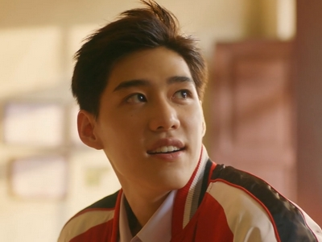

深度專題 · Deep Dive
以你的心詮釋我的愛
แปลรักฉันด้วยใจเธอ · I Told Sunset About You · S1 2020 / S2 2021
用你的心，換我的意——
在普吉島的夕陽下，一段無從言說的愛，
以椰子的香氣、扶桑花的花語，緩緩說清楚。
故事設定在普吉島老城區，以兩位童年好友「德」（Teh）與「歐兒」（Oh-aew）的重逢為核心。兩人因童年時的一場爭執分道揚鑣，多年後卻在大學聯考補習班中再度相遇。
德兒擁有華裔血統，夢想成為中國古裝劇演員；歐兒則個性溫柔、熱愛閱讀。兩人既是舊友、又是競爭對手——隨著補習時光的積累，曖昧走向無可迴避的深情。
第一部以普吉島的悠緩夏日為舞台，在宣告與迴避之間製造張力。第二部《我許你以月光》將場景移至曼谷，以成熟視角審視感情在現實考驗下的動搖與重建。
第一季普吉島
集數情感弧線
- 01
重逢與競爭
補習班的偶遇，舊日裂縫再現。德兒發現自己難以忽視歐兒的存在。
- 02
椰香的記憶
關係逐漸鬆動，熟悉的氣味成為情感的觸發器。歐兒第一次讓德兒笑出聲來。
- 03
嫉妒的味道
歐兒對Bas的感情讓德兒第一次意識到心裡那道說不清楚的痛。
- 04
扶桑花的花語
「微妙的愛情，接近不了卻也無法離開」——沙灘上的心跳時刻。
- 05
夕陽下的告白
一切終於說清楚。但承認之後，才是更深的考驗的開始。
《以你的心》的情感敘事最迷人之處在於它的「克制」。全劇幾乎不使用直白的情話，而是讓情感滲透在日常細節裡——椰子洗髮精的香氣、跑向夕陽的奔跑、「你可以嗎？」「可以！」的專屬問答。
翻譯心意：劇名本身即是核心隱喻。德兒將中文古詩翻譯給歐兒，是「用你能理解的語言，傳遞我說不出口的感情」的具體行動——語言即媒介，翻譯即愛情。
成長的陣痛：編劇不迴避青春期的「醜陋」面——嫉妒、自私、逃避。德兒在傳統華裔家庭期待與自我認同間的掙扎，使本作超越一般純愛劇，成為一部真實的成長敘事。
「戲中戲」的設計尤其精妙——德兒的古裝劇台詞不斷與現實關係形成對照，構成全劇最具深度的隱喻層。
情感符號系統
🥥 椰子香氣 — 思念
🌺 扶桑花 — 微妙的愛
🌅 夕陽 — 告白的時刻
🎭 戲中戲 — 現實的映射
🎵 歌詞翻譯 — 心意的傳遞
🏊 水下場景 — 感官的溶解
⛵ 渡船 — 猶豫與決定
🎆 爆竹聲 — 壓抑的釋放
導演納盧拜·庫諾（Naruebet Kuno）採用大量電影感的拍攝手法，攝影指導 Tawanwad Wanavit 以暖色調光源為基調，讓《以你的心》在質感上遠超同類電視劇製作。
色彩分鏡（Color Script）是本劇最被評論家稱道的技法。暖橘代表德兒——衝動、熱烈、占有慾；湛藍代表歐兒——溫柔、感性、深邃。當兩人靠近，紫色漸層出現，象徵兩個色彩的交融。
電影級攝影：大量自然光與廣角鏡頭，捕捉普吉島濕潤的夏日氛圍。雙機拍攝讓演員自然流動情感，無需重複表演。
拍攝正值雨季，多變的天氣反而成為助力——雨水在情感爆發時刻適時降臨，形成了許多難忘的即興畫面。
色彩分鏡解析
德兒 · 暖橘
衝動、熱烈、占有慾強。側光強調輪廓，色溫偏暖。
歐兒 · 湛藍
溫柔、感性、深邃。逆光剪影，色溫偏冷藍。
交融 · 紫色漸層
兩人靠近或情感達頂點時，橙與藍交融為紫——兩個靈魂的視覺化融合。
劇中色彩意象
| 比較維度 |
第一季 · 普吉島的夏天 |
第二季 · 曼谷的現實 |
| 場景設定 |
普吉島老城區、海灘、廟堂——封閉的島嶼時空，如夢境般脫離現實 |
曼谷大學校園、公寓、都市街道——開放的城市空間，現實感強烈 |
| 整體色調 |
暖橘夕陽、熱帶飽和色彩、強烈的光影對比；如印象派油畫般的浪漫感官 |
冷白城市光、霓虹散光、低飽和的日常感；如紀實攝影般的疏離質感 |
| 敘事節奏 |
緩慢、感官沉浸式；大量靜止鏡頭與意象積累，情感以「留白」說話 |
加快、更多對話衝突；以角色的言語直接傳遞矛盾，情感以「爆發」釋放 |
| 主題核心 |
初戀的降臨、身份認同的迷惘、愛在開口之前的所有猶豫 |
愛在承認之後的考驗、個人成長vs感情、距離感與背叛的陰影 |
| 攝影風格 |
廣角鏡頭、自然光、長焦特寫；捕捉皮膚質感與微表情，電影感極強 |
標準鏡頭、多機剪輯；更動態的場面調度，呼應都市生活的節奏感 |
| 音樂運用 |
OST作為敘事工具（Skyline、Closer），歌詞即台詞，音樂承擔大量情感表達 |
OST退居背景，對話與環境音更多；音樂不再主導，戲劇衝突取而代之 |
| 整體評價 |
被廣泛視為「詩意BL」的代表，藝術評價極高，情感密度濃縮如詩 |
更貼近現實的青春成長劇，情感更複雜，但部分觀眾感覺「失去了魔法」 |
角色弧線的轉變

德 · Teh
第一季
衝動、占有慾、充滿熱情卻不知如何表達。德兒是行動先於思考的人——他用奔跑、用競爭、用嫉妒去證明一段連他自己都不敢承認的愛。他的弧線是「發現自己愛上了歐兒」。
第二季
進入大學後，德兒的自信遭到現實打擊：演藝夢遠比想象中艱難，而他與歐兒的關係也在新環境中承受考驗。他學會了「承認自己的脆弱」，但同時也展現出更多的自私與逃避——使角色更立體，也更令人心疼。

歐兒 · Oh-aew
第一季
溫柔、善感、帶著一絲神秘感。歐兒是接收型的人——他總是被動地等待，對感情的接受比主動追求來得更自然。第一季的他是「被愛的對象」，美麗而略顯被動。
第二季
第二季的歐兒展現了更強的主體性——他開始主動做選擇，包括有時選擇「拉開距離」。他的成長讓人看見了獨立與依賴之間的拉鋸，也讓兩人關係的裂痕從外部衝突內化為彼此性格的摩擦。
導演敘事手法對比
兩位導演面對同樣的角色與世界觀，卻選擇了截然不同的電影語言。
Naruebet Kuno
第一季導演 · 普吉島
意象驅動：用椰子、扶桑花、夕陽等具體意象積累情感，鏡頭如詩人的眼睛，重感知而非說明。
靜止美學：大量靜止或緩慢推進的長鏡頭，給觀眾空間去感受而非被告知。
自然光主義：強烈依賴自然光與場景既有的光源，拒絕人工打光的「整齊感」。
音樂敘事：OST承擔大量敘事功能，歌詞呼應角色心境，音樂是「第二層台詞」。
Tossaphon Riantong
第二季導演 · 曼谷
衝突驅動：更依賴場景中的對話衝突推進敘事，情感通過言語直接呈現。
動態剪輯：更頻繁的鏡頭切換，呼應曼谷都市生活的節奏感與角色內心的不安。
環境音設計：城市噪音、人群聲被有意識地納入聲音設計，強化「現實感」。
心理化場景：空間（如狹小的公寓）被用來外化角色的心理狀態，空間即情緒。
兩季場景美學對比：普吉島夕陽橙 vs 曼谷冷白都市
《以你的心》最獨特之處，是它深植於普吉島的華裔泰人（Peranakan）文化脈絡。德兒家族的福建移民背景並非裝飾，而是整個故事情感張力的來源。
德兒學中文、夢想演古裝劇；他在廟堂裡和歐兒許願，在傳統節慶的爆竹聲中釋放情緒。這些元素使「壓抑」有了具體的文化根基——不只是因為喜歡男生，更是因為閩南移民家族的保守傳統。
普吉老城的騎樓建築、廟宇屋簷、碼頭漁村——這些場景是兩個角色文化身份的具體延伸，賦予了本劇在美學上的唯一性。
劇中的中文運用極具匠心。德兒翻譯古詩給歐兒，本身就是「以你能理解的方式傳達我的愛」——翻譯即愛情，這是全劇最動人的文化設計。
普吉島華裔文化場景意象
文化符號解讀
🏛️
普吉老城 · 空間符號
百年騎樓象徵「傳統與現代的夾縫」，是兩人關係的空間隱喻
🎋
華裔文化 · 情感壓抑
閩南移民家族的保守傳統為德兒的壓抑提供了具體的文化根基
🎭
中文戲劇 · 身份認同
古裝劇台詞與現實關係的對照，構成全劇最深的隱喻層
🏯
廟堂祈願 · 宗教空間
泰中混合廟堂承載了兩人的少年願望，也是重逢的空間依托
製作資訊
📺
播出平台
Line TV（泰國）· WeTV · iQIYI
🎞️
S1 導演
納盧拜·庫諾 Naruebet Kuno
🎥
S2 導演
托薩蓬·連通 Tossaphon Riantong
📅
播出時間
S1：2020年10月22日 · S2：2021年5月起
🎭
主演
Billkin 飾 德兒 Teh
PP 飾 歐兒 Oh-aew
獎項與影響力
🏆
Teen Vogue
入選2021年度最佳BL劇（S2）
✈️
旅遊帶動
長週末吸引逾59,000名旅客前往普吉島朝聖
🌐
國際傳播
菲律賓本地配音播出；台灣、中國、日本均引發熱潮
💬
評論定位
「不只是BL劇的BL劇」——電影規格使其超越類型邊界
演員介紹 · Cast Profiles
Billkin × PP
普吉島上的兩個少年
《以你的心詮釋我的愛》之所以能成為BL類型的里程碑，兩位主演的化學反應功不可沒。他們不只在戲中詮釋了德兒與歐兒，更在戲外以真誠與自然的相處讓全球粉絲傾倒。
2000年9月出生於曼谷，泰中混血，本身擁有中文學習背景，與角色德兒的華裔身份高度契合。Billkin以歌手身份出道，具備深厚的音樂底蘊，也因此在《以你的心》中的OST演唱與情感詮釋上顯得格外真實。他的表演以「克制中爆發」著稱——愛到最深處的樣子，他用眼神說完了。
1998年8月出生，比Billkin年長兩歲，在私下的年齡差異卻與角色的年齡設定相反——這種「戲外反差」也成為粉絲津津樂道的話題。PP以清新自然的表演風格見長，能用最細微的表情傳遞複雜的情感層次。他在《以你的心》中飾演的歐兒被許多觀眾視為「最接近完美」的BL男主角，溫柔而有深度。PP同時也參與OST演唱，歌曲「Skyline」成為本劇最具代表性的聲音符號。
知名OST
Skyline · Coming of Age
CP 化學反應
BillkinPP — 不只是戲裡
兩人在2019年《愛的救護車》首次相遇，驚人的螢幕默契讓粉絲強烈要求合拍主角劇。《以你的心》播出後，BillkinPP成為泰國近年最受矚目的CP之一，見面會票券秒售罄，商業代言邀約不斷。他們的特別之處在於，即便在「非工作」狀態下，兩人的互動依然自然真誠，讓粉絲相信那份情誼是真實存在的。


.jpg)